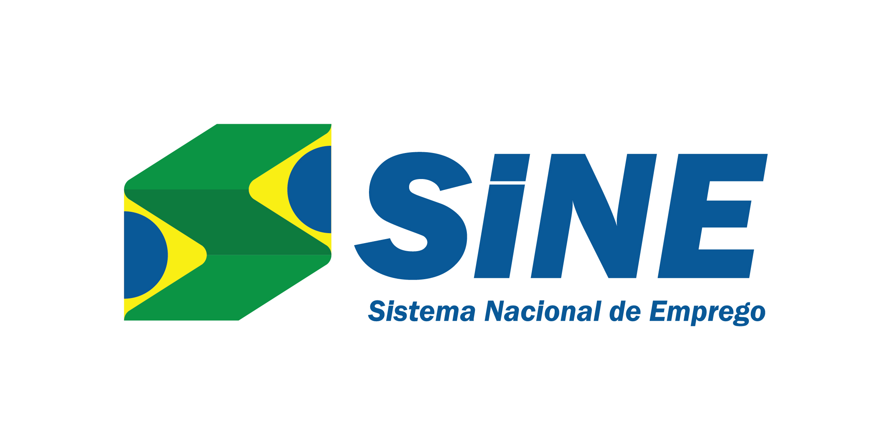

|  | HOME | CONTATO | SOBRE NÓS |
O Sistema Nacional de Emprego (SINE) é um órgão do governo federal do Brasil, coordenado pelo Ministério da Economia, por intermédio da secretaria especial de Produtividade, Emprego e Competitividade. Criado com o objetivo de fazer a unificade mão-de-obra através de suas agências espalhadas por todo o país, controlar o pagamento do seguro-desemprego e apoiar o Programa de Geração de Emprego, Trabalho e Renda (PROGER), até 2019 o SINE era responsabilidade do Ministério do Trabalho, que foi incorporado ao Ministério da Economia. Além disso, por meio do Sine, o trabalhador consegue confeccionar sua carteira de trabalho e principalmente, consultar vagas de trabalho disponíveis na sua cidade, região ou estado. Tem agências em diversas localidades do país e inclusive em shoppings, lançados no estado do Rio de Janeiro. Entretanto, nem todas as cidades brasileiras possuem agência.